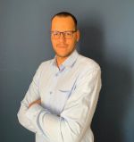
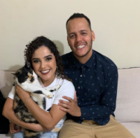
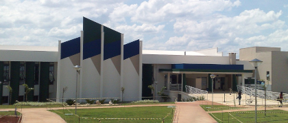
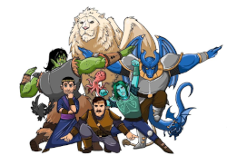

Olá, meu nome é Frederico Oliveira. Desenvolver Front-end.
Mas você pode me chamar de Fred!

Família
Desde pequeno eu sou um grande amante das histórias, e não tem forma melhor de começar a contar minha história do que por aqui.
Meus pais são minha inspiração e meu irmão o grande parceiro, eles me mostraram como construir uma família feliz

Minha família é nova, mas nem por isso falta amor aqui no nosso lar. Elas são o meu motivo pra me esforçar tanto e ser cada dia melhor.
Mais um pouco sobre mim
Você já conhece minha base agora vou contar um pouco mais sobre o Fred. Eu sou mineiro de Divinópolis, torcedor do Cruzeiro, jogador de RPG, pai de gato, engenheiro agrônomo e dev front-end. Recentemente eu assumi o desafio de me tornar um desenvolvedor, e desde então tenho colocado toda a minha energia em estudar tecnologia voltadas para o front-end. Nos últimos meses eu tenho estudado através de livros, imersões, cursos e treinamentos para me tornar o melhor desenvolvedor que eu posso ser.
Academia
Eu sou muito feliz por ter tido a oportunidade de estudar em um lugar tão magico, com certeza o meu respeito pela a ciência o profissionalismo, ética e entre outras características que me habilitam como pessoal e profissional estão ligados ao fato de ter uma base educacional tão solida.

Role Playing Game
Um hobby da minha época da infância que retomei durante a pandemia, usando ferramentas digitais eu consigo me reunir com um grupo de amigos uma vez por semana para nos divertimos em mudos imaginários.
Jogar rpg faz muito bem para minha socialização, resolução de problemas, imaginação e criatividade. Uma habilidade que essa prática me ajudou a desenvolver muito com o passar dos anos foi a minha eloquência.

Projetos
No final do ano de 2022 participei de um treinamento em Salesforce commerce cloud front-end. Aqui eu tive uma ótima prova de fogo para as minhas habilidades, colocamos em pratica nesse programa conhecimentos em HTML5, CSS3 e JS. Outro grande desafio vencido aqui foi a barreira do idioma, o programa foi ministrado completamente em inglês.
Eu trabalhei por alguns anos como agrônomo, mais especificamente na área comercial, durante esse tempo tive muitas oportunidades de desenvolver minhas habilidades de comunicação, argumentação. Trabalhar como agrônomo foi ótimo para o desenvolvimento do meu trabalho em equipe, em mais de uma vez tive que atuar em times muito grandes. E por fim viajar tanto me permitiu aperfeiçoar meu senso de logística.